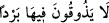

o zaman kelime “şaraben”den istisnâ yapılmış olur.
İbn Mesud (r.a.)’den rivâyete göre “gassak” cehennemdeki azab çeşitlerinden birinin
adı olup “şiddetli soğuk” demektir. Hatta öylesine ki cehennemlikler oraya
atıldıklarında Allah’tan zemherir soğuğu ile bir gün azab edilmeye karşılık cehennemde
bin yıl azab edilmeyi isterler. Çünkü cehennem azâbını zemherir azâbından daha hafif
görürler.
Şehreyn Havşeb der ki: “Gassak” cehennemde bir vâdinin adıdır. Bu vâdide üç yüz
otuz bölüm vardır ve her bölüm üç yüz otuz evden ibarettir. Her evde dört köşe ve her
köşede bir yılan vardır. Bu yılan, Allah’ın yaratıkları içerisinde en büyük yaratıklar
gibidir. Bunlardan her bir yılanın başında bir zehir vardır.
Bâzıları “lâ yezukun/tatmazlar” ifâdesinin “lâbisîn” kelimesindeki zamirden hal
olduğunu, dolayısıyla bu ifâdenin bir başlangıç cümlesi olamıyacağını söylemişlerdir.
Buna göre âyetin mânâsı; “o azgınlar orada kaynar su ve irinden başka hiçbir şey
tatmaksızın ebediyyen kalırlar. Sonra geçen uzun çağların ardından kaynar su ve irin
dışında başka azablara uğrarlar” demek olur. Böylece burada içiçe girmiş haller
sözkonusu olur. Buna göre “ahkaben” kelimesi “lâbisîn” kelimesinin zarfı olup,
“lâbisîn” ise “lâ yezukun/tatmazlar” fiilinin mânâsıyla kayıtlı olur. Kayıtlı olan bu
durumun sona ermesi, mutlak olan kalma fiilinin de sona ermesini gerektirmez. Şu halde
âyetteki “ahkaben/çağlar boyu” şeklindeki kayıt, cehennemde kalmakla ilgili değil,
“görülen o azabla” ilgili bir kayıttır.
İbn Mesud (r.a.) şöyle demiştir: Cehennemlikler cehennemde dünyadaki çakıl
taşlarının sayısı kadar kalacaklarını bilselerdi sevinirlerdi. Cennetlikler de cennette
dünyadaki çakıl taşlarının sayısı kadar kalacaklarını bilselerdi üzülürlerdi.
Bir başka tahlile göre “ahkaben” kelimesinin “lâ yezukun” fiilinden mansub zarf
olması mümkündür. Bu tahlil, “lâ”dan sonraki âmilin mamûlünün, kendisinden önce
gelebileceğini söyleyen âlimlere göredir. Buna göre kelime, “lâbisîn” kelimesinin zarfı
olmamış olur. Bu takdirde âyetten “kâfirlerin cehennemde belli bir süre kalacakları ve
sonra dışarı çıkacakları” anlamı çıkarılamaz. Çünkü artık “ahkaben/çağlar boyu”
ifâdesi “lebs/kalmak” kelimesinin zarfı değildir.
“Ahkaben” kelimesinin hiçbir kelimenin zarfı olmaması, tam tersine “lâbisîn”
kelimesinin içindeki zamirden hal olması da mümkündür. Bu takdirde âyetin mânâsı;
“onlar her türlü hayır ve bereketten mahrum bir şekilde, sıkıntı içinde oldukları halde
orada kalırlar” demek olur. Bu takdirde “ahkaben” “hakib” kelimesinin çoğulu olup,
“hakibe’r-reculu/kişi rızıktan mahrum oldu” terkibinden alınmış olur. Zira görüldüğü
üzere kelimenin kökünde “mahrûmiyet” anlamı vardır. Bu anlamdan dolayı içinde
hayrın, yağmurun ve bereketin az olduğu yılı ifâde etmek için araplar “hakibe’l-amu”
derler. Bu takdirde, “/orada hiçbir serinlik tatmazlar” ifâdesi, onların
çektikleri sıkıntının tefsiri mâhiyetinde olur. Bu durumda âyetten “azgınların
cehennemde belli bir süre kalacakları” anlamı çıkmayacağından dolayı müşkili çözmek
için başka bir yoruma da ihtiyaç kalmaz.